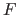
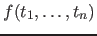
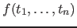

A function call always succeeds with a return value if no exception occurs. Functions are defined with non-backtrackable rules in which the head is an equation = , where is the function pattern in the form
 and holds the return value. When
, where is the function pattern in the form
 and holds the return value. When  , the parentheses can be omitted.
, the parentheses can be omitted.
Subsections
Claudio Cesar de Sa
2016-05-29